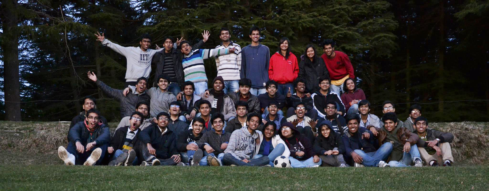
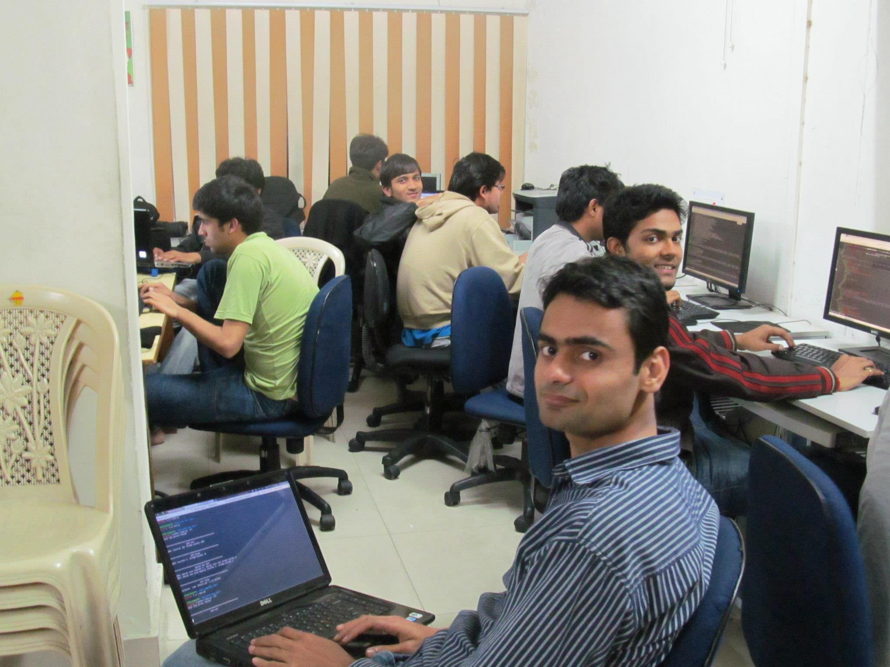
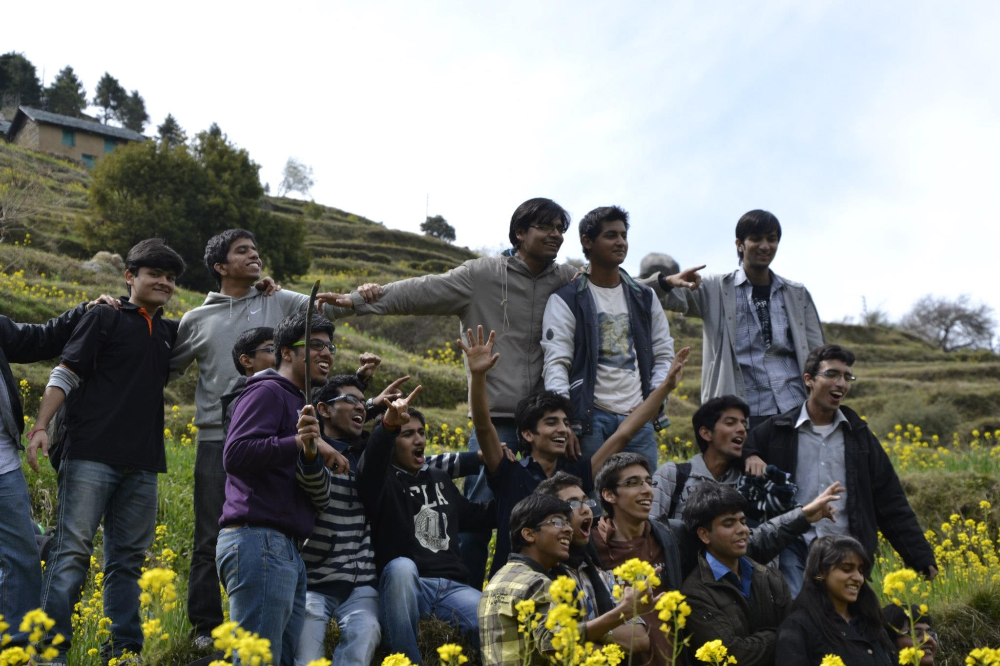

As I sit in front of my laptop, reading IMG's description, it reads something like this.
IMG (Information Management Group) is a student's group in IIT Roorkee responsible for development and maintainance of internet and intranet applications in the institute, including the website of IIT Roorkee.
But after spending about 4 years with the group, I would like to define it as a group of very passionate people who work their asses off to keep this institute running like a well-oiled machine.
If there's one thing that IMG has taught me, it is to leave my comfort zone, fail spectacularly, fall flat on my face if I must but learn something.
How did we get here?
When I joined IITR, I was an underdog. Hell, people even took the trouble to tell it to my face that I wasn't good enough. When I was in my second year, IMG was looking for designers and developers. I thought I'd give it a try. When I looked at the questionnaire, it had questions that involved HTML and CSS. You might be thinking that what's the problem but I had never written HTML before and had never heard of CSS in my life. We had to submit our work within two days. I remember asking Lalit the following night,"yaar website mein dabbe kaise banate hain? (dude, how do you make different sections in a website?)".
That is the first time I remember actually leaving my comfort zone after joining IITR. I remember we were asked to redesign a page from our institute's website and then implement the new design with HTML/CSS. I decided to de-construct the older page bit by bit and learn HTML and eventually figured out CSS too. After long frustating hours, I finally had an HTML page that looked like what I wanted it to. After a very scary interview, I eventually made it.
I remember Shaumik Daityari congratulating me by saying,"Welcome to IMG, the only place in the campus where you realize what you are actually capable of". I was not quite sure what he meant. I was about to find out.
When I joined IMG, I found that it was not like most groups in the campus. There was one thing that separated it from the - Discipline. It is made sure that no one is idle in the group. If you are a part of the group, you have to be contributing in some way or the other. It's a place where you work on deadlines and apart from working on your own projects manage others as well. These are the values that have been passed year after year and even though our work may look different from what it was a decade ago, the faces might have changed but these values remain the same.
The People
 At IMG, I met the best people in the campus. And by best I don't meant nerds or geniuses, just awesome, genuine people who are really cool to be with. Like everyone, before joining IMG I too had an impression that IMG is a groups of geeks who code all day long and have evil laughs when they have an eureka moment. It was after joining IMG that I discovered that it is about very normal people who are extremely driven. I met people with whom you can discuss any problem of yours and they will consider it theirs. Also, this should not come as a surprise that some of my best friends are from IMG.
The Lab
 I may sound like a very sad person but I must have spent more than half of my stay at IITR in IMG lab. I can't even imagine what my life at IITR would have been like had I not been a part of this. When the environment (read people) is this awesome and the ACs are at their highest why would you be anywhere else? I would not be lying if I say that IMG lab has been my first home in the campus.
The Fun
 It's baffling when you see you mentors and seniors dressed as dracula or joker in their farewell. People put in months of planning and hardwork to make sure that their seniors feel special when they leave. IMG's farewells are crazy as hell and heart touching at the same time. I've seen people tear up when their memories flash before their eyes. On IMG trips we've been to the most beautiful destinations of North India but places don't really matter when company is that good. Apart from that, everyday in IMG lab is full of puns, poor jokes, good (some bad) music and lots of laughs. Also, people here, have a thing for shaking a leg.
The Work
Among many things that I worked on, Channel i will always be the closest to my heart. When you are trusted enough to be asked to design something like that, it's exciting and intimidating at the same time. That's the time when I was carrying my toothbrush in my bag and was attending my classes after pulling all nighters in the lab working on something I love. Me and Shubham were working on the new Channel i, constantly burning our midnight oil. That's the most collaborative design work I've ever done. When you haven't slept for last 2 days and your project, your baby, that you have been working on for fast 6-8 months finally gets launched and you finally settle in for hypersleep, that is the most amazing and satisfying feeling in the world.
Here, I've seen people work in the most selfless manner, tackling the most intimidating problems because someone has to. People here are not getting paid for the work they do yet they do. The fuel that keeps them going comes from somewhere else. It's the desire to learn and to give more than you take.
And yes! It was after joining IMG that I took one of the most important decisions of my life - that I want to design for the rest of my life.
Key Takeways
1) Just dive in. You will figure it out.
2) In order to learn something new it's imperative that you leave your comfort zone.
3) There's a huge difference in being sincere and being serious. The fact that you are sincere towards your work doesn't mean you have to grim all the time.
4) Your leadership qualities are actually tested when you manage people much smarter than yourself.
5) It's not always easy to close your eyes, trust and fall back but you must.
6) Love what you do. Everything else will fall into place.
7) Also never fall in love in your work too much. In order to survive, you must constantly evolve and it means that someday your work will be replaced by something much better.
8) Invest in great people.
9) Making the right decisions is not as important as making sure that the right decisions get made when you are not there.
10) Prioritize and reprioritize. There might be things that might be blocking some more important things. It's always important to keep the pipline clean.